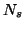

Next: Testing the whole range
Up: Force Field Box
Previous: extrapolate{F/T,polyn,points}
Contents
Controls smoothing out the forces using a certain number of points,

.
Parameters: F, or T,
Default: T,2
Example: smooth{F/T,points}
T 2
Lev Kantorovich
2005-08-04